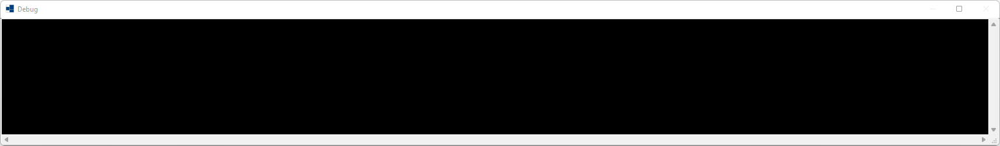
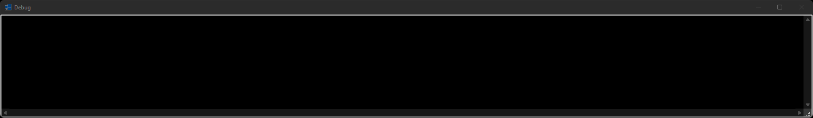
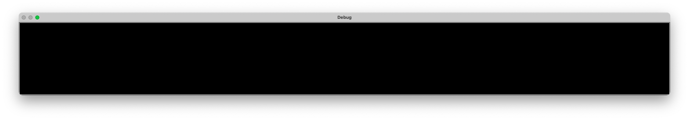
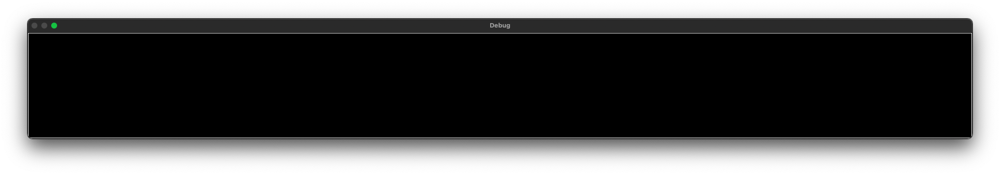
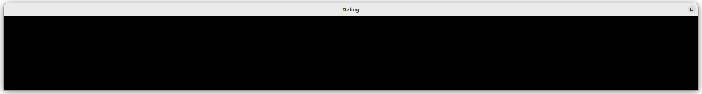
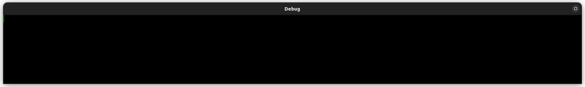

|
xtd
0.2.0
|
Loading...
Searching...
No Matches
debug_form.cpp
demonstrates the use of xtd::debug_forms::debug_form container.
- Windows
- 

- macOS
- 

- Gnome
- 

#define DEBUG // Force debug mode even if example is builded in release.
#include <xtd/forms/application>
#include <xtd/forms/button>
#include <xtd/forms/debug_form>
#include <xtd/forms/form>
#include <xtd/diagnostics/debug>
using namespace xtd::forms;
public:
form1() {
text("Debug form example");
button1.auto_repeat(true);
button1.auto_size(true);
button1.location({10, 10});
button1.parent(*this);
button1.text("Write line...");
button1.click += [&] {
static int counter = 0;
};
}
private:
button button1;
};
auto main()->int {
df.fore_color(xtd::drawing::color::lime);
application::run(form1 {});
}
static void write_line()
Writes a line terminator to the trace listeners in the listeners collection.
Definition debug.h:370
static const xtd::drawing::color lime
Gets a system-defined color that has an ARGB value of 0xFF00FF00. This field is constant.
Definition color.h:286
static const xtd::drawing::color black
Gets a system-defined color that has an ARGB value of 0xFF000000. This field is constant.
Definition color.h:79
virtual drawing::color back_color() const noexcept
Gets the background color for the control.
Represents a form that displays debug form. This class cannot be inherited.
Definition debug_form.h:34
Represents a window or dialog box that makes up an application's user interface.
Definition form.h:52
The xtd::forms namespace contains classes for creating Windows-based applications that take full adva...
Definition xtd_about_box.h:12
Generated on Fri Feb 23 2024 21:06:05 for xtd by Gammasoft. All rights reserved.